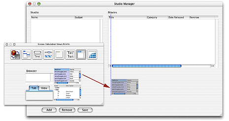
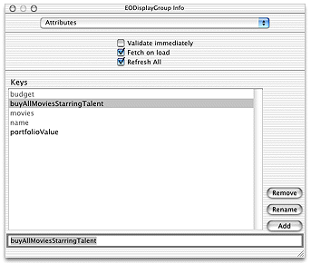

| PATH |

As the preceding sections illustrate, you can go quite far in a Java Client application without writing any code. However, the real power of such an application or any Enterprise Objects Framework application lies in the enterprise objects you create. The behavior (business logic) you add to your objects is what brings your stored data to life.
When creating a model of a database using the EOModeler application's wizard, you have the option of creating custom enterprise objects. If this option is selected, EOModeler derives both entity name and class name from the name of the associated database table. Otherwise, EOModeler maps entities to the EOGenericRecord class, which can be thought of as the default enterprise object class.
The EOGenericRecord class is sufficient when all you want the entity to do is get and set properties. However, when you want to add custom behavior to a class (for example, to assign default values when you create new objects or to perform validation), you need to implement a custom enterprise object class. This class includes the default behavior provided in EOGenericRecord as well as the custom behavior you implement.
To use a custom class instead of EOGenericRecord follow these steps:
Make sure you're in Table mode.
If the Client-Side Class Name column is not visible, choose Client-Side Class Name from the Add Column pop-up menu at the bottom of the window.
Repeat the above steps for the Talent entity (append "Talent" to the package names).
Save the model.
By convention, the names of classes (minus the package prefix) are based on the name of the corresponding entity and the initial letter of the name is capitalized.
There is no requirement that you create matching server and client classes. You can implement a class only on the server or the client, whichever suits your needs; the unimplemented class assumes the default behavior of EOGenericRecord.
Once you specify a custom class for an entity in EOModeler, you can generate source files for that entity.
For more information on custom enterprise objects, see "When Do You Use a Custom Enterprise Object Class?".
Project Builder stores most of the files for a project at the top level of the project directory. To separate business logic files from normal WebObjects files, it is recommended that a group called Business Logic be created in the project. In it, all the business logic files can be stored. To further separate server-side files from client-side files, the Business Logic group should contain at least two subgroups: Server and Client. And additional subgroup, Common, can be added under Business Logic when you want to share behavior with the server and client applications.
To create the recommended grouping for Java Client projects, follow these steps:
Create the following directories at the top level of your project directory:
BusinessLogicBusinessLogic/ServerBusinessLogic/ClientBusinessLogic/Common (optional,
not needed for this tutorial)In the Groups & Files list of Project Builder's main window, select the StudioManager root group.
Choose Project > New Group.
Name the group "Business Logic".
To begin creating your custom classes, generate source files
for the Studio and Talent entities. You'll use these source files
as a basis for adding custom behavior to your enterprise objects.
Generating source files in a Java Client application typically produces skeletal
Java (.java) files for
the associated class. You then add these files to your project.
Note: To generate source files for an entity, you must have replaced the text "EOGenericRecord" in the Class Name and Client-Side Class Name fields with a package name concatenated with a class name. |
.java files.Open the Movies model file (if it's not already open).
Select the Studio entity.
Choose Property > Generate Client Java Files.
Select the Client directory inside the BusinessLogic directory.
Click Save.
![[image: ../Art/creatingclientclasses.gif]](../Art/creatingclientclasses.gif)
Repeat the process for the Talent entity.
.java files.Select the Studio entity.
Choose Property > Generate Java Files.
Select the Server directory inside the BusinessLogic directory.
Click Save.
Repeat the process for the Talent entity.
When EOModeler generates a class file (such as Studio.java), it
strips off the package prefix and inserts a package declaration
near the top of the file. The class file also includes the necessary
import declarations as well as the instance variables and accessor
methods derived from the properties of the entity as defined in
the model file.
After you have generated custom Java files for the enterprise objects that you wish to customize, you can add them to your project. Remember that you must first prepare your project file as explained in "Getting Your Project Ready to Receive Custom Classes".
In the Groups & Files list in Project Builder's main window, select the Business Logic group.
Choose Project > Add Files.
Select the Client directory in the BusinessLogic directory.
Click Open.
The target selection sheet appears.
Select the Client target.
Click Add.
In the Groups & Files list in Project Builder's main window, select the Business Logic group.
Choose Project > Add Files.
Select the Server directory in the BusinessLogic directory.
Click Open.
The target selection sheet appears.
Select the Server target.
Click Add.
Now the project uses custom classes for the Studio and Talent enterprise objects instead of EOGenericRecord. These class files can now be edited to implement custom behavior.
If you examine the code in Listing 3-1, you'll notice that the class generated by EOModeler does not have actual instance variables or fields. The methods to access the attributes of the custom enterprise object are implemented using key-value coding.
Listing 3-1 Client-side Studio.java file generated by EOModelerpackage businesslogic.client;
import com.webobjects.foundation.*;
import com.webobjects.eocontrol.*;
public class Studio extends EOGenericRecord {
public Studio() {
super();
}
public Studio(EOEditingContext context, EOClassDescription classDesc, EOGlobalID gid) {
super(context, classDesc, gid);
}
public String name() {
return (String)storedValueForKey("name");
}
public void setName(String value) {
takeStoredValueForKey(value, "name");
}
public Number budget() {
return (Number)storedValueForKey("budget");
}
public void setBudget(Number value) {
takeStoredValueForKey(value, "budget");
}
public NSArray movies() {
return (NSArray)storedValueForKey("movies");
}
public void setMovies(NSMutableArray value) {
takeStoredValueForKey(value, "movies");
}
public void addToMovies(EOGenericRecord object) {
NSMutableArray array = (NSMutableArray)movies();
willChange();
array.addObject(object);
}
public void removeFromMovies(EOGenericRecord object) {
NSMutableArray array = (NSMutableArray)movies();
willChange();
array.removeObject(object);
}
}
The user interface you designed in Interface Builder already allows you to insert and delete Studio objects. However, it doesn't do any additional processing when these operations take place. For example, what if you want to assign default values to newly created objects? And how can you prevent users from inserting objects that contain invalid data? You can add methods to your enterprise objects to handle such issues.
For more information, see "Adding Behavior to Enterprise Objects".
The value of Java Client applications, of course, lies in their ability to distribute processing duties among objects on the server and objects on the client. Primarily for security and performance reasons, you can have only objects on the server performing some tasks and only objects on the client performing others.
For example, sometimes you want only objects behind the firewalls and other security mechanisms of the server to have access to sensitive information, such as account numbers. On the other hand, processing tasks such as calculation of balances should be performed by objects on the client, thereby improving application performance by eliminating the need for a cycle of the request-response loop.
There are no hard and fast rules for how to distribute object behavior. An enterprise object on the client can have the same set of methods and instance variables as its counterpart on the server, or what it has can be a subset (or superset) of the other object's methods and instance variables. The best way to distribute business logic among objects depends on the particular nature of your application.
In "Transferring Movies Between Studios" you added a pop-up list to the user interface to transfer movies between studios. However, there is still work to be done. When a movie is sold to a new studio, you need to add the amount of the movie's revenue to the old studio's budget (to show the studio's profit from the sale). Likewise, you need to subtract the amount of the movie's revenue from the new studio's budget (to reflect the expense of purchasing the movie).
When you transfer movies between studios, you're actually
manipulating the movies relationship
property in each of the Studio objects, deleting the Movie object
from the movies array
of the old studio, and adding the Movie object to the movies array
of the new studio. Enterprise Objects Framework automatically invokes
the method addObject when you
add an object to an array that represents a relationship property,
and invokes removeObject when
you delete an object from the array. These methods are part of the EORelatioshipManipulation
protocol. See the EOControl Java API Reference for
details.
When passed a key (such as movies),
the default implementations of these methods look for a method that
has the name addToKey (when
an object is being added) and removeFromKey (when
an object is being removed). Skeletal versions of these methods
are provided in the source code you created using EOModeler in "Generating Source Files".
To intervene and perform your own processing when objects
are added to and removed from the movies relationship
array, you add code to the methods addToMovies and removeFromMovies in
the Studio class of the Client target, as shown in Listing 3-2.
import java.math.*;
public void addToMovies(EOGenericRecord object) {
NSMutableArray array = (NSMutableArray)movies();
willChange();
// Subtract movie's revenue from budget.
Number newBudget;
Number movieRevenue = (Number)object.storedValueForKey("revenue");
newBudget = new BigDecimal(budget().doubleValue() - movieRevenue.doubleValue());
setBudget(newBudget);
array.addObject(object);
}
public void removeFromMovies(EOGenericRecord object) {
NSMutableArray array = (NSMutableArray)movies();
willChange();
// Add movie's revenue to budget.
Number newBudget;
Number movieRevenue = (Number)object.storedValueForKey("revenue");
newBudget = new BigDecimal(budget().doubleValue() + movieRevenue.doubleValue());
setBudget(newBudget);
array.removeObject(object);
}
One kind of behavior you might want to add to your enterprise
object class is the ability to perform computations based on the
values of class properties. For example, studios have movies, and
the total revenue of the movies times 1.5 constitutes the studio's
portfolio value. To calculate a studio's portfolio value, you
could have a method in Studio.java like the
one shown in Listing 3-3.
import java.math.*;
public Number portfolioValue() {
int i, count;
double total;
NSArray revenues;
total = 0.0;
revenues = (NSArray)(movies().valueForKey("revenue"));
count = revenues.count();
for (i = 0; i < count; i++) {
total +=
((Number)(revenues.objectAtIndex(i))).doubleValue();
}
return new BigDecimal(total * 1.5);
}
You can display the results of this method in the user interface by forming an association between a control and the method. That way, whenever a new studio is selected or when a selected studio's movie revenues change, its portfolio value is dynamically recalculated and displayed.
Add the code in Listing 3-3 to the client-side Studio.java file.
Save the Studio.java file.
Open the project's interface (nib) file.
Display the Attributes pane of the Info window for the Studio EODisplayGroup.
Enter
the name of the method (portfolioValue)
you want to use in an association into the text field.
Click Add.
Once you've added the method as a class key, you can use it in associations.
Using Figure 3-3 as a guide, do the following:
Figure 3-3 Adding elements to the interface
Associate
the Revenue text field with the portfolioValue method:
value in
the left column.portfolioValue in
the right column.Repeat the process
to connect the Name field to Studio's name attribute
and the Budget field to the budget attribute.
Currency formatters aren't added automatically, because a field has no way of knowing that it's going to be used to display currency values-it's just connected to a property.
From the Data Views palette, drag the currency formatter into the Budget text field.
Once you've added the formatter, you can use the Info window to change the display format.
Select the standard currency format.
Repeat the process for the Revenue text field.
(See "Building and Testing Your Application" for details.)
Another behavior you'll likely want to add to your enterprise object classes is validation. For example, suppose that when a studio buys a new movie, you want to make sure that acquiring the movie won't cause the studio to exceed its budget. You could implement a method in the Studio class like the one shown in Listing 3-4.
Listing 3-4 Studio.java (server and client) - Validationpublic void validateBudget(Number budget) throws
NSValidation.ValidationException {
if (budget.intValue() < 100) {
throw new NSValidation.ValidationException
("A budget cannot be less than $100");
}
}
You use a NSValidation.ValidationException object to tell Enterprise Objects Framework that the current object graph is not cleared to be saved to the database.
Now when a studio buys more movies than it can afford, a panel displaying the message "A budget cannot be less than $100" appears when the user attempts to save the changes to the database.
Validation methods must be of the form validateAttribute.
The validateBudget method
is invoked by the validateValueForKey method,
which is part of the EOValidation interface that uses the EOClassDescription
class to provide default implementations of validation methods.
These methods are invoked automatically by framework components
such as EODisplayGroup and EOEditingContext. They are
You can find more information on this topic in the book Enterprise Objects Framework Developer's Guide.
When new objects are created in your application and inserted into the database, it's common to assign default values to some of their properties. For example, you might decide to assign newly created Studio objects a default budget (the budget is the amount a studio is allowed to spend on new movies).
To assign default values to newly created enterprise objects,
use the method awakeFromInsertion.
This method is automatically invoked right after your enterprise object
class creates a new object and inserts it into an EOEditingContext.
Listing 3-5 shows the implementation of awakeFromInsertion in
the Studio class. It sets the default value of the budget property
to be one million dollars.
public void awakeFromInsertion(EOEditingContext context) {
super.awakeFromInsertion(context);
if (budget() == null) {
setBudget(new BigDecimal("1000000"));
}
}
When a user clicks the Add Studio button in the StudioManager application, a new record is inserted, with "$1,000,000.00" already displayed as a value in the Budget column.
In a Java Client application you may want some methods to execute only on the server. This is particularly the case when security is an issue, but performance can be a reason as well (as when the method consumes a lot of system resources). Objects on the client side of a Java Client application can use two methods to invoke a server method:
false prevents
the client from pushing its editing-context state to the server.)If you want to give studios the ability to buy all of the
movies that star a specified actor but consider this a sensitive
computation, you can implement a method like the one in Listing 3-6 in
the client's Studio.java.
public void buyAllMoviesStarringTalent(Talent talent) {
invokeRemoteMethod("clientSideRequestBuyAllMoviesStarringTalent", new Class[] {Object.class}, new Object[] {talent});
}
The method begins with clientSideRequest;
this is not accidental. The EODistributionContext object on the
server-side EODistribution layer will reject a remote invocation
unless it has this prefix or its delegate implements
the proper delegation methods (see the reference documentation for
EODistributionContext or EODistributedObjectStore for more information).
Listing 3-7 shows the invoked method, which is implemented in
the server's Studio.java.
public void buyAllMoviesStarringTalent(Talent talent) {
int i, count;
NSArray talentMovies;
EOEnterpriseObject movie, studio;
talentMovies = talent.moviesStarredIn();
count = talentMovies.count();
for (i = 0; i < count; i++) {
movie =
(EOEnterpriseObject)(talentMovies.objectAtIndex(i));
if (!(movies().containsObject(movie))) {
studio =
(EOEnterpriseObject)(movie.valueForKey("studio"));
if (studio != null)
studio.
removeObjectFromBothSidesOfRelationshipWithKey
(movie,"movies");
addObjectToBothSidesOfRelationshipWithKey
(movie,"movies");
}
}
}
public void clientSideRequestBuyAllMoviesStarring(Object object) {
buyAllMoviesStarringTalent((Talent)object);
}
Listing 3-8 shows server's buyAllMoviesStarringTalent method,
which invokes the moviesStarredIn method.
public NSArray moviesStarredIn() {
int i, count;
NSArray movies;
NSMutableArray moviesStarredIn;
EOEnterpriseObject movie;
moviesStarredIn = new NSMutableArray();
movies = (NSArray)(movieRoles().valueForKey("movie"));
count = movies.count();
for (i = 0; i < count; i++) {
movie = (EOEnterpriseObject)(movies.objectAtIndex(i));
if (!(moviesStarredIn.containsObject(movie))) {
moviesStarredIn.addObject(movie);
}
}
return moviesStarredIn;
}
You can associate the buyAllMoviesStarringTalent method
with a user interface control. But first you need to add to your
user interface a table that lists all actors (talent).
Drag the Talent entity from your model into the nib file window in Interface Builder.
Drag a table view from the Palette onto your window.
Control-drag from the first table view column into the Talent EODisplayGroup.
Using
the value aspect of the EOTableColumnAssociation, connect the table
view column to the firstName attribute
of the Talent EODisplayGroup.
Using a similar process,
connect the second column of the table view to the lastName property
of the Talent EODisplayGroup.
Drag a button into the window and place it below the Revenue field.
Give it the title "Buy Movies Starring Selected Talent".
Now that you've
added the table view, connected it to the firstName and lastName properties
of the Talent EODisplayGroup, and added a Buy button to the window, you're
ready to use an EOActionAssociation to connect the button to the buyAllMoviesStarringTalent method.
Display the Attributes pane of the Info window for the Studio EODisplayGroup.
In
the text field type the name of the method (buyAllMoviesStarringTalent)
you want to use in an association.
Click Add.
You can now use the buyAllMoviesStarringTalent method
in associations.
Control-drag from the Buy Movies Starring Selected Talent button to the Studio EODisplayGroup.
In the Connections pane of the Info window, choose EOActionAssociation from the pop-up menu at the top of the left column.
Select action in
the left column, and the method you want to connect to (buyAllMoviesStarringTalent)
in the right column.
Click Connect.
Because the buyAllMoviesStarringTalent method
takes a Talent object as an argument, you also need to make a connection
from the Buy button to the Talent EODisplayGroup.
Control-drag from the Buy Movies Starring Selected Talent button to the Talent EODisplayGroup.
In
the Info window, select argument in
the left column. The argument aspect takes the destination of the
connection (Talent) as an argument, which will be supplied to the buyAllMoviesStarringTalent method.
Click Connect.
Once you finish connecting the button, you can use it to purchase all of the movies starring the selected actor for the selected studio.
In Java Client applications you can give the interface controller
(implemented in this project in StudioManagerInterfaceController.java on
the client) a controller display group. By
creating associations between the controller display group and aspects
of user-interface elements, you can use the interface controller
to manage various facets of the user interface. In the following
steps, you add a method as a property of the controller display group
and bind this method to the enabled aspect
of the Revenue field through an EOControlAssociation; since this
method simply returns false,
the field is disabled.
Drag a display group from the EnterpriseObjects Palette to the nib file window.
Double-click the title of the display group to select it.
Give the display group the name "Controller".
As
mentioned earlier, the owner of the nib file (File's Owner) is
an instance of the custom EOInterfaceController automatically created
by Project Builder. EOIntefaceController has a controllerDisplayGroup outlet;
you'll connect the interface controller to this outlet.
Control-drag from File's Owner to the Controller icon.
In the Connections pane of the Info window, select controllerDisplayGroup.
Click Connect.
Now you'll
add the neverEnabled method
as a property of the controller display group.
Select the Controller display group in the nib file.
In the
Attributes pane of the Info window, enter neverEnabled in
the field.
Click Add.
Now you'll hook up the field to the display
group using an EOActionAssociation to bind its enabled aspect
to the neverEnabled method.
Control-drag from the Revenue field to the Controller display group.
In the Connections pane of the Info window, choose EOActionAssociation from the pop-up list at the top of the left column.
Select enabled in
the left column.
Select neverEnabled in
the right column.
Click Connect.
neverEnabled method.Now
that the interface controller, the controller display group, and
the Revenue field are interconnected via their outlets and associations,
you can implement the method bound to the enabled aspect
(in StudioManagerInterfaceController.Java on
the client) as Listing 3-9 shows.
public boolean neverEnabled() {
return false;
}Build the project and test the application. The user can copy the contents of the Revenue field but it cannot be written into.
© 2001 Apple Computer, Inc.